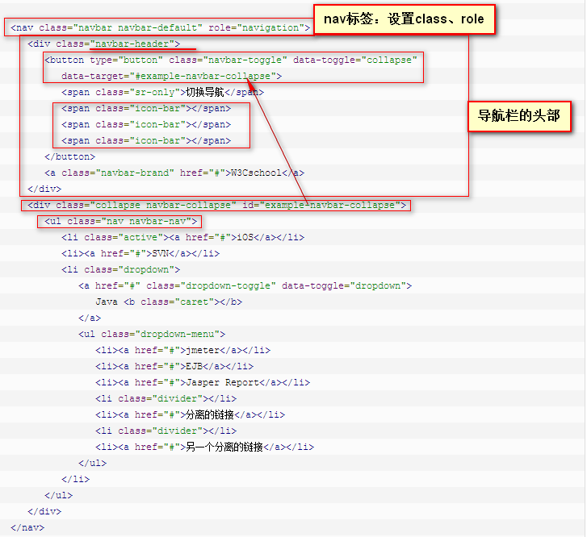

表格导航或标签：创建一个标签式的导航菜单
以一个带有 class .nav 的无序列表开始。
添加 class .nav-tabs。
默认的导航栏
向 nav标签添加类.navbar或是.navbar-default。
向nav标签添加 role="navigation"，有助于增加可访问性。
向 div 元素添加一个标题类 .navbar-header，内部包含了带有 class navbar-brand 的 a元素。这会让文本看起来更大一号。
为了向导航栏添加链接，只需要简单地添加带有类 .nav、.navbar-nav 的无序列表即可。
响应式的导航栏
1. 要折叠的内容必须包裹在带有 .collapse、.navbar-collapse 的 div 中。
2. 折叠起来的导航栏实际上是一个带有类 .navbar-toggle 及两个 data- 元素的按钮：
(1)第一个是 data-toggle="collapse"，用于告诉 JavaScript 需要对按钮做什么:collapse值
(2)第二个是 data-taret="#navBarTest"，指示要切换到哪一个元素。
(3)三个带有 .icon-bar 的 span 创建所谓的汉堡按钮。

导航栏中的按钮：您可以使用类 .navbar-btn 向不在 form 中的 button 元素添加按钮，按钮在导航栏上垂直居中。.navbar-btn 可被使用在 a 和 input 元素上。
不要在 .navbar-nav 内的 a元素上使用 .navbar-btn，因为它不是标准的 button class。